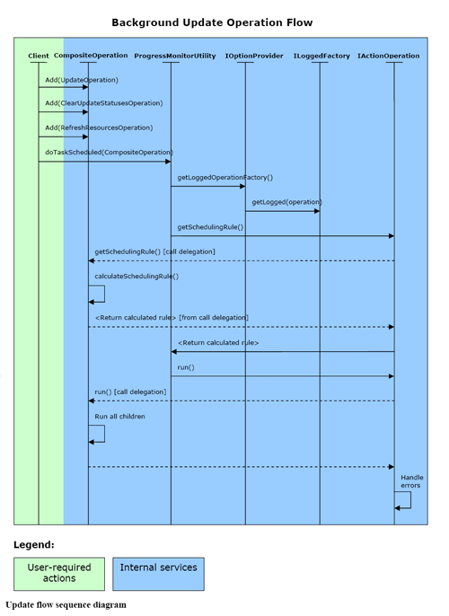

|
|
|
The main Subversive project's architecture points are:
Core plug-in API has two levels to it - the high-level and the low-level APIs. First is the most frequently used one and it is based on the low-level API.
The High-level API consists of the following parts:
The Low-level API allows to build Command Framework extensions in order to handle some rarely used or application-specific cases.
The Subversive UI extends Command and Execution Frameworks with UI specific features most of which can be reused by dependent projects. Additionally Subversive UI provides powerful and flexible Data Validation Framework for dialogs and wizards. The existing extension points allow reorganizing the Subversive UI functionality where it is of importance. For example the "Error Reporting" extension point allows to redirect bug reporting into application specific mailing list, while "Commit" extension point allows to customize commit workflow, used by plug-in by default.
UI plug-in extends Core functionality with several UI-specific features:
The Subversive architecture overview shows how the project structure conform to requirements. Both of the modules - Core and UI - are separate entities and the core module is fully functional on its own, so it can be used in order to build automated applications. Unified error handling mechanisms improves the Subversive project's fault tolerance. API concept allows to extend plug-in functionality easily with the least amount of work required.
Sample of Subversive Core API usageOn the following picture you can see the flow of calls that is required in order to update resources to the latest revision in a background thread. And next are "Code Sample 1" and "Code Sample 2" - both are the samples of how it looks in the code.

public class UpdateAction extends AbstractRecursiveTeamAction {
public UpdateAction() {
super();
}
public void runImpl(IAction action) {
IResource []resources = this.getSelectedResources(IStateFilter.SF_ONREPOSITORY);
if (resources == null || resources.length == 0) {
return;
}
this.runScheduled(UpdateAction.getUpdateOperation(resources, SVNRevision.HEAD));
}
public boolean isEnabled() {
return this.checkForResourcesPresence(IStateFilter.SF_ONREPOSITORY);
}
public static CompositeOperation getUpdateOperation(IResource []updateSet, SVNRevision selectedRevision) {
boolean ignoreExternals = SVNTeamPreferences.getBehaviourBoolean(SVNTeamUIPlugin.instance().getPreferenceStore(), SVNTeamPreferences.BEHAVIOUR_IGNORE_EXTERNALS_NAME);
UpdateOperation mainOp = new UpdateOperation(updateSet, selectedRevision, ignoreExternals);
CompositeOperation op = new CompositeOperation(mainOp.getId(), mainOp.getMessagesClass());
op.add(mainOp);
op.add(new ClearUpdateStatusesOperation(mainOp), new IActionOperation[] {mainOp});
op.add(new RefreshResourcesOperation(mainOp));
op.add(new NotifyUnresolvedConflictOperation(mainOp));
return op;
}
protected boolean needsToSaveDirtyEditors() {
return true;
}
}
In general case it is not required for programmers to implement their own commands and work with the SVN Client library's API. Nevertheless the task could be completed easily and in order to do so we do provide the low-level API which covers SVN functionality and hides the differences introduced by SVN API versions. Also, the implementation process requires programmer to take no further actions in order to ensure the files are locked, errors are properly handled and so on. The only requirement is to free all of the allocated resources in the "finally" section.
Code Sample 2: Command implementation
public class MarkResolvedOperation extends AbstractWorkingCopyOperation {
protected SVNConflictResolution.Choice conflictResult;
protected SVNDepth depth;
public MarkResolvedOperation(IResource[] resources, SVNConflictResolution.Choice conflictResult, SVNDepth depth) {
super("Operation_MarkResolved", SVNMessages.class, resources); //$NON-NLS-1$
this.conflictResult = conflictResult;
this.depth = depth;
}
public MarkResolvedOperation(IResourceProvider provider, SVNConflictResolution.Choice conflictResult, SVNDepth depth) {
super("Operation_MarkResolved", SVNMessages.class, provider); //$NON-NLS-1$
this.conflictResult = conflictResult;
this.depth = depth;
}
protected void runImpl(IProgressMonitor monitor) throws Exception {
IResource []resources = this.operableData();
for (int i = 0; i < resources.length && !monitor.isCanceled(); i++) {
IRepositoryLocation location = SVNRemoteStorage.instance().getRepositoryLocation(resources[i]);
final String path = FileUtility.getWorkingCopyPath(resources[i]);
final ISVNConnector proxy = location.acquireSVNProxy();
this.protectStep(new IUnprotectedOperation() {
public void run(IProgressMonitor monitor) throws Exception {
proxy.resolve(path, MarkResolvedOperation.this.conflictResult, MarkResolvedOperation.this.depth, new SVNProgressMonitor(MarkResolvedOperation.this, monitor, null));
}
}, monitor, resources.length);
location.releaseSVNProxy(proxy);
}
}
}
The Command Framework functionality
The Command Framework totally contains 87 commands which are presents in three subsets:
The core commands covers all the SVN functionality used in Subversive and they can be fully reused without any restrictions. At the same time most of the UI commands are designed for interactive usage, so they cannot be used in automated processing.
| Command | Description |
| Execution Framework part (2) | |
| LoggedOperation | Allows to safely write errors into log |
| CompositeOperation | Handles workflow management and builds resource locking rules |
| Core Command Framework (59) | |
| SaveProjectMetaOperation | Saves the project meta data (.project and .classpath) in order to prevent project refresh problem when the meta data are deleted during update, switch etc. |
| RestoreProjectMetaOperation | Restores the project meta data (.project and .classpath) in order to prevent project refresh problem when the meta data are deleted during update, switch etc. |
| ShareProjectOperation | Shares the projects from scratch |
| ReconnectProjectOperation | Reconnects the projects with existing SVN meta-information |
| DisconnectOperation | Disconnects the projects with or without deletion of SVN meta-information |
| CheckoutOperation | Checkout a set of projects into the workspace |
| CheckoutAsOperation | Checkout the project into the specified location with the specified set of options |
| ObtainProjectNameOperation | Requests the real project name for the project in a SVN repository |
| CommitOperation | Commits the specified resources |
| JavaHLMergeOperation | Merges the specified resources |
| UpdateOperation | Updates the specified resources |
| AddToSVNIgnoreOperation | Adds the specified resources to svn:ignore |
| AddToSVNOperation | Adds the specified resources to source control |
| LockOperation | Locks the specified resources |
| UnlockOperation | Unlocks the specified resources |
| RevertOperation | Reverts modifications |
| MarkAsMergedOperation | Marks conflict as resolved |
| RemoveNonVersionedResourcesOperation | Removes any unversioned resources starting from the level specified |
| SwitchOperation | Switches the specified resources to the new URL |
| GetPropertiesOperation | Gets all of the resource properties |
| SetPropertyOperation | Sets the specified resource's property |
| RemovePropertyOperation | Removes the specified resource's property |
| GetAllResourcesOperation | Gets all the resources for the specified local folder including deleted, missing etc. |
| SaveRepositoryLocationsOperation | Saves the Subversive meta-information changes |
| DiscardRepositoryLocationsOperation | Removes the specified repository locations from the Subversive meta-information |
| AddRepositoryLocationOperation | Adds the specified repository location to the Subversive meta-information |
| AddRevisionLinkOperation | Creates a revision link to the specified resource revision in the Subversive meta-information |
| RemoteStatusOperation | Fetches update status for the specified resources |
| InfoOperation | Retrieves complete information for the specified resource |
| RelocateWorkingCopyOperation | Relocates the specified working copy |
| CreatePatchOperation | Creates a patch based on the working copy |
| RefreshResourcesOperation | Refreshes the workspace tree and sends an internal resource modification event |
| NotifyProjectStatesChangedOperation | Sends an internal notification event when the project's state is changed (shared, disconnected, opened, closed etc.) |
| GetRemoteContentsOperation | Gets remote file's or folder's content into the specified folder overriding all the existing files |
| GetFileContentOperation | Fetches the remote file's content from SVN |
| GetLocalFileContentOperation | Fetches the local file's content from SVN (BASE or WORKING revisions) |
| CleanupOperation | Cleans the specified working copy up after a power loss or any other failure, that happened in time of working copy modification |
| ClearLocalStatusesOperation | Refreshes the status cache for the specified resources |
| MoveResourceOperation | Moves the specified resources between folders in one and the same or different working copies while preserving the history |
| CopyResourceWithHistoryOperation | Copies the specified resources between folders in one and the same or different working copies while preserving the history |
| CopyResourceOperation | Copies the specified resources without preserving the history |
| DeleteResourceOperation | Deletes the versioned resources |
| RenameResourceOperation | Moves the specified resource from one URL to another |
| LocateProjectsOperation | Finds an Eclipse projects on the repository |
| ImportOperation | Imports the specified folder into the repository |
| GetResourceAnnotationOperation | Gets the annotation for the specified resource |
| GetRemotePropertiesOperation | Gets properties for the specified resource on repository |
| GetLogMessagesOperation | Gets the specified resource modification history |
| ExportOperation | Exports the specified repository resource into the specified local folder |
| DeleteResourcesOperation | Deletes the specified resources directly from the repository |
| CreatePatchOperation (remote) | Creates patch based on the difference between revisions |
| CreateFolderOperation | Creates a hierarchy of folders at any depth on the repository |
| CreateFileOperation | Creates a file directly on the repository with specified initial content |
| BreakLockOperation | Unlocks the resource directly on the repository |
| BranchTagOperation | Creates a branch or tag |
| CopyResourcesOperation (remote) | Copies the specified resources to the specified URL |
| MoveResourcesOperation (remote) | Moves the specified resources to the specified URL |
| UI Command Extensions (16) | |
| UILoggedOperation | UI extension of LoggedOperation, shows error to the user and proposes to send a bug report in case of internal failure |
| ShowUpdateViewOperation | Shows the "Synchronize View" |
| ShowConflictEditorOperation | Shows the conflicted file editor (when the resources were updated externally or without solving conflicts in the "Synchronize View" before updating) |
| ClearUpdateStatusesOperation | Clears update statuses cached for the "Synchronize View" |
| ShowPropertiesOperation | Shows the property editor |
| RefreshRepositoryLocationsOperation | Refreshes the repository browsing view |
| PrepareRemoteResourcesTransferrableOperation | Inserts references to the repository resources into the clipboard |
| PasteRemoteResourcesOperation | Pastes the repository resources from the clipboard and into the selected location |
| OpenRemoteFileOperation | Opens the remote file in its default viewer |
| NotifyUnresolvedConflictOperation | Notifies the user if any unresolved conflicts happened while resources were committed/updated |
| ShowMergeViewOperation | Shows Merge View |
| FileToClipboardOperation | Copies the file content into the clipboard |
| CompareResourcesOperation | Compares the working copy resource with the selected revision in the three-way mode and shows the result in the compare viewer |
| CompareRepositoryResourcesOperation | Compares the repository resource with the specified revision in the two-way mode and shows the result in the compare viewer |
| RefreshRemoteResourcesOperation | Refreshes the specified repository resources in the repository browsing view |